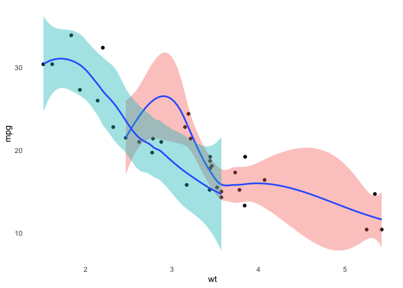

This package contains my personal miscellaneous functions.
You can install the package from Github via
remotes::install_github("enixam/ymisc")Scaffold a bs4_book format bookdown project with automatic deployment
use_bookdown("my-awesome-book", tempdir(), gh_action = TRUE)Note that the github action for deploying the book to github pages is designed to use renv for installing dependencies. So you’ll need to run renv::init() in the new project directory before it can work.
General hypothesis testing in multiple linear regression
library(ymisc)
df <- df <- read.table("http://www.stat.ucla.edu/~nchristo/statistics_c173_c273/jura.txt", header=TRUE)
df <- df[, c(-1, -2, -3, -4)]
C <- matrix(
c(0, 1, 0, 1,
0, 0, 1, 0),
nrow = 2, byrow = TRUE)
d <- c(0, 3)
clm_res <- clm(Pb ~ Cd + Co + Cr, data = df, coef_mat = C, d = d)
# F statistic and p-value of
clm_res$F_stat
#> [1] 13.47309
clm_res$p_value
#> [1] 2.291637e-06
# estimate of beta under H_0
clm_res$coefficients
#> [,1]
#> (Intercept) 16.2167926
#> Cd -0.2993491
#> Co 3.0000000
#> Cr 0.2993491In cases of testing significance of individual parameters, t test can be used by setting t_test = TRUE. Suppose we want to obtain the t statistic for
C <- matrix(c(0, 1, 0, 0), nrow = 1)
d <- 0
clm_t <- clm(Pb ~ Cd + Co + Cr, data = df, coef_mat = C, d = d, t_test = TRUE)
clm_t$t_stat
#> [1] 1.842206
clm_t$p_value
#> [1] 0.06627892We can verify that the t statistic is the square root of the F statistic, and the p-value is the same.
clm_f <- clm(Pb ~ Cd + Co + Cr, data = df, coef_mat = C, d = d)
sqrt(clm_f$F_stat) # same as t statistic
#> [1] 1.842206
clm_f$p_value
#> [1] 0.06627892An alternative is using anova for nested models, which yields the same result
anova(lm(Pb ~ Co + Cr, data = df),
lm(Pb ~ Cd + Co + Cr, data = df))
#> Analysis of Variance Table
#>
#> Model 1: Pb ~ Co + Cr
#> Model 2: Pb ~ Cd + Co + Cr
#> Res.Df RSS Df Sum of Sq F Pr(>F)
#> 1 356 365976
#> 2 355 362510 1 3465.5 3.3937 0.06628 .
#> ---
#> Signif. codes: 0 '***' 0.001 '**' 0.01 '*' 0.05 '.' 0.1 ' ' 1Write a data frame groupwise
There are times when we may wish to write different groups of a data frame to separate files. I used to turn to puurrr::group_walk for this, but it is not that easy to control names of such files. group_write is a wrapper ofgroup_walk and utilizes grouping functions from dplyr to automate this task as well as providing informative files names.
Suppose we would like to divide passengers in the Titanic according to their age and gender, this would result in 4 groups
path <- tempdir()
titanic <- as.data.frame(Titanic)
titanic <- titanic[rep(1:nrow(titanic), titanic$Freq), -5]
dplyr::count(titanic, Sex, Age)
#> Sex Age n
#> 1 Male Child 64
#> 2 Male Adult 1667
#> 3 Female Child 45
#> 4 Female Adult 425Now use group_write to output this 4 groups into different csv files:
group_write(titanic, Sex, Age, dir = path)
list.files(path, "\\.csv$")
#> [1] "titanic-Female-Adult.csv" "titanic-Female-Child.csv"
#> [3] "titanic-Male-Adult.csv" "titanic-Male-Child.csv"Set multiple file encodings at once
set_file_enc uses iconv to convert files between encodings. The input can either be a directory or a single file. It works well with import functions from the readr package.
A light ggplot2 theme
I plan to include more custom ggplot2 themes in this package. Currently there is only one light theme, theme_clean()
library(ggplot2)
mtcars %>%
ggplot(aes(wt, mpg, fill = factor(am))) +
geom_point() +
geom_smooth() +
theme_clean()
#> `geom_smooth()` using method = 'loess' and formula 'y ~ x'
Convert scripts into markdown code blocks
intended to use with chunk option results='asis'
# convert multiple scripts
code_blocks(c(dir1, dir2, dir3))
# convert single script
code_block(file)